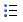

| BOUTONS GENERALS |
|
Bouton Mode Design - changer r.a.d.editor
dans le mode de design. |
- |
 |
Bouton Mode HTML - changer
r.a.d.editor
dans le mode de HTML. |
- |
|
Bouton Mode Prévision - changer r.a.d.editor
dans le mode de prévision. |
- |
 |
Écran Mode
Bascule -
changer r.a.d.editor
dans le mode de plein écran. |
- |
 |
Bouton Exposer/Chaser - exposer ou cache des frontières autour des tables
dans le secteur content. |
- |
 |
Bouton Directeur Module - active/termine d'une
liste de
modules disponibles. |
- |
 |
Bouton Termine L'amarrage -
accouple tous les toolbars flottants à leurs secteurs d'amarrage respectifs. |
- |
 |
Bouton Répétez -
un raccourci pour répéter la dernière action a exécuté. |
- |
 |
Bouton Trouvez/Remplacez - trouve (et
remplace) le texte dans le secteur content du rédacteur. |
Ctrl+F |
 |
Bouton Impression - copies le contenu du r.a.d.editor ou de la page
Web entière. |
Ctrl+P |
 |
Bouton Orthographique -
lancements le correcteur orthographique. |
- |
|
Bouton Couper - coupe la sélection et l'insère dans le presse papier.
|
Ctrl+X |
|
Bouton Copier - copie la sélection et l'insère dans le presse papier. |
Ctrl+C |
|
Bouton Pâte - pâtes le contenu copié de la planchette dans le rédacteur. |
Ctrl+Y |
 |
Bouton Collez Plain -
pâtes raffinent
le texte (aucun formatage) dans le rédacteur. |
- |
|
Bouton Pâtes de Word - pâtes contenu du Word et
enlève les étiquettes enchaînement-peu amicales. |
- |
|
Bouton Pâten
de HTML
- collee
le code de HTML dans le secteur content et garde toutes les étiquettes
de HTML. |
- |
|
Bouton Annuler
- annuler les derniers changements. |
Ctrl+Z |
|
Bouton Refaire - Réapplique les derniers
changements annulés. |
Ctrl+Y |
 |
Bouton Retrait Formatage - supprimer les balises de formatage du texte.
|
- |
|
Bouton Aide Rapide - pour accéder à l'aide rapide (document actuel). |
- |
 |
Bouton au Sujet de - montre la version
en cours et les qualifications de r.a.d.editor. |
- |
|
INSÉRER, MODIFIER ET GÉRER LES LIENS,
TABLEAUX, IMAGES MÉDIAS ET CARACTÈRES SPÉCIAUX |
 |
Bouton Directeur Image - insérer une image d'un répertoire pré-défini. |
Ctrl+G |
 |
Image map - Permet aux utilisateurs de
définir des parties de l'image sur lesquelles on peut cliquer. |
- |
 |
Bouton Position Absolut - définir la
position d'un objet |
- |
|
Bouton Tableau - insére un tableau dans l'éditeur. |
- |
 |
Bouton Permuter Borders - permute les
bordures de tous les tableaux de l'éditeur. |
- |
 |
Bouton Code-Snipeer
- insère un code-snipper prédéfini. |
- |
|
Bouton Forme - insère un élément de forme
d'une liste drop-down avec les éléments disponibles. |
- |
 |
Bouton Date - insère la date du jour. |
- |
|
Bouton Temps - insère le temps courant. |
- |
 |
Bouton Directeur Animantion - insère
une animation Flash et permet de définir ses propriétés. |
- |
|
Bouton Directeur Média -
insère un objet Windows Média (AVI, MPEG, WAV, etc.) et permet de définir
ses propriétés. |
- |
 |
Bouton Directeur Document -
insère un document (PDF, Word)dans l'éditeur. |
- |
 |
Bouton Hyperlien - transforme le contenu sélectionné en hyperlien. |
Ctrl+K |
 |
Bouton Retire Hyperlien - retire l'hyperlien
du contenu sélectionné. |
Ctrl+Shift+K |
 |
Bouton Caractères Spéciaux. - insère des caractères spéciaux. |
- |
|
Bouton Lien
Predefini - insère un lien interne ou externe à partir d'une liste pré-définie. |
- |
 |
Bouton Calibre - s'applique et calibre
de HTML à partir d'une liste prédéfinie de calibres. |
- |
| INSÉRER, MODIFIER ET
FORMATER LES PARAGRAPHES |
|
Bouton Insère - insère un
nouveau paragraphe. |
Ctrl+M
Ctrl+Enter
|
 |
Bouton Style - applique le style standard au texte sélectionné. |
- |
|
Bouton déplace Gauche - déplace le paragraphe vers la gauche |
- |
|
Bouton Déplace Droite - déplace le paragraphe
vers la droite |
- |
 |
Buoton Aligne Gauche- aligne le
paragraphe sélectionné au gauche. |
- |
|
Buouton Aligne Centre- aligne le
paragraphe sélectionné au centre. |
- |
|
Bouton Aligne Driote
- aligne le paragraphe sélectionné à droite |
- |
|
Bouton Justifie - justifie le paragraphe
choisi. |
- |
|  |
Bouton Puces - insère des puces à la sélection. |
- |
|
Bouton Numérotation - insère une numérotation à la sélection. |
- |
 |
Bouton Ligne - insère une ligne horizontale
à l'emplacement du curseur. |
- |
| INSÉRER, MODIFIER ET
FORMATER LE TEXTE ET LES LISTES |
|
Bouton Gras - applique un format gras
à la sélection. |
Ctrl+B |
|
Bouton Italic - applique un format italic à la sélection. |
Ctrl+I |
|
Bouton Souligné -
applique un format souligné à la sélection. |
Ctrl+U |
|
Bouton Exposant - applique un format
exposant à la sélection. |
- |
|
Bouton Indice - applique un format indice à la sélection. |
- |
 |
Bouton Police - sélection de la police
de caractères. |
- |
 |
Bouton Taille - sélection de la taille
de la police. |
- |
|
Bouton Coleur - sélection de la couleur
du texte. |
- |
|
Bouton Fond
- changer
de la couleur de l'arrière plan du texte. |
- |
|
Bouton coutume
- applique
un style pré-défini au texte sélectionné. |
- |
|
Enlève Formatage - enlève le formatage
du texte choisi ou entier. |
- |
|
AUTRES RACCOURCIS DE CLAVIER |
| - |
Choisit tous les texte, images et tables
dans le rédacteur. |
Ctrl+A |
| - |
Recherche dans la page |
Ctrl+F |
| - |
Fermer la fenêtre active. |
Ctrl+W |
| - |
Fermer l'application active. |
Ctrl+F4 |